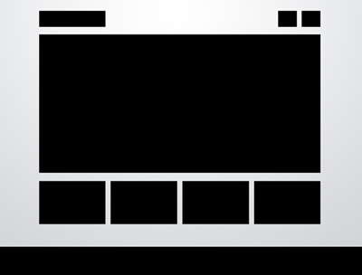
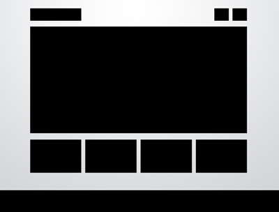

| Layout 1: 5 Boxes |
|---|
   |
| Site Name: | Nintendo, Entertainment of America | Site URL: | http://www.nintendo.com |
|---|---|
| Date Looked At: | 1/15/2012 | Attributes: |
Brand: Nintendo is able to show off it's brand well with the photos it has on it's slideshow. It's able to portray itself as a fun, family-oriented, edgy, childish, technical company that makes products and games that suits the need of its wide range of customers.
Functionality: Nintendo's main aim is to sell its hardware to their customers. On the front page you are easily able to see a small clickable button that says "VIEW HARDWARE." Clicking that will slide down a menu featuring their Wii, Nintendo 3DS, and Nintendo DS lines. Clicking on any of those pictures brings you to a secondary page dedicated to the hardware you clicked, which has all the information for it- from price point to links to pages which talk about its features. The front page also advertises their newest games in a stylish, appealing manner and clicking on the pictures of the games takes you to a secondary page with more information on them. Interactivity: Nintendo's homepage seems to use a carousel image slider that is timed (you can see a timer as quadrants of blue fill up). When the timer is up, the image changes. There is also an option to horizontally scroll through the pictures on the bottom, but there is no timer there. Navigation: Navigation on Nintendo's page was very good. The top navigation bar was always visible, no matter what page so I could always go back to the home page if needed. If I clicked on a link and went to another page, the area where I was at would be highlighted. |
| Layout 2: Feature Graphic |
|---|
| Site Name: | David Bushell does Design | Site URL: | http://dbushell.com |
|---|---|
| Date Looked At: | 1/16/2012 | Attributes: |
Brand:David is able to make his website look very clean and minimal without looking like it is too minimal (plain text and white background). With the use of his featured graphic and the hints of green all around the page, he's able to make his website look lively and colorful. It seems to be saying he can design both cleanly, but add touches to make things stand out and unique.
Functionality: David's website aims to be a portfolio and to showcase his skills in both web design and front-end development. When you click on his portfolio, it takes you to a page where his works are devided by "Web Design" and "Graphic Design." Then clicking on a specific thumbnail brings you to a new page where it tells you all about the item you clicked and includes more pictures. There seems to not really be any problems with it. Interactivity: There doesn't seem to be much interactivity here. Nothing slides or pops up. Everything seems to just take you to another static page when you click it. Navigation: Navigation was done fairly well. There's the standard navigation bar that is on every page, so you can always go back to home if needed. Also if you click on any of the things in the navigation bar, the item is highlighted. However it is not highlighted when you click any of his works, but there is a "Return to Portfolio" link at the bottom of those pages. |
| Layout 3: 3D Screenshots |
|---|
| Site Name: | FoundationSix | Site URL: | http://foundationsix.com |
|---|---|
| Date Looked At: | 1/16/2012 | Attributes: |
Brand: FoundationSix is a web design company that designs websites for businesses. Looking at it's front page, they have a clean design that makes good use of color. It also looks very modern and the simple typography they use makes them seem very professional. By having screenshots of previous web designs they've done as their 3D screenshots, they are able to give the possible client a view of their work without even having to find their portfolio.
Functionality: FoundationSix's website is meant to advertise their services to businesses. They are able to serve this function well as when you click on "The Work" on their navigation bar, it takes you to their portfolio page where they've showcased their previous designs. There is also a small blurb of information on the left side for each website they've designed. It is also handy that they have a "Get Quote" button right at the top so you don't even have to navigate to their "Contact Us" page. Interactivity: There doesn't seem to be much interactivity within this page. The only thing that seems animated is the blurb next to each of their works. It's fixed so it scrolls along the page. However, you can't really interact with that. Navigation: Navigation is very simple and general. There is a staticn navigation bar on the top right of the page and depending on what page you are on, the link is highlighted so you're not lost. |
| Layout 4:Headline and Gallery |
|---|
| Site Name: | Bunton | iPhone and iPad App Designer and Developer | Brisbane, Melbourne, Australia | Site URL: | http://bunton.com.au |
|---|---|
| Date Looked At: | 1/16/2012 | Attributes: |
Brand: This is Sean Bunton's portfolio website showcasing his iphone/ipad applications and his web design. He is able to make it look very clean and streamlined using the Headline and Gallery format. He also doesn't use obtrusive fonts so it also looks professional. It is also a nice touch that his website is simple because it reflects on his works and clients can catch a glimpse of that.
Functionality: The function of this website is to showcase his designs. It shows his designs in small screenshots, but a lot of them aren't clickable and don't go to a secondary page. The ones that do, provide very simple information (a few sentences then a link to the Apple App Store) or take you to another company's website. Functionality seems limited. Interactivity: There seems to be no interactivity at all on this website. Everything seems to be static and many of the screenshots don't even enlarge. Navigation: There is no navigation on this website. Everything is all on the homepage. There is only an "Enquiries" button on top- which allows you to send him an e-mail, and a "follow me on twitter" button. |
| Layout 5: Featured Photo |
|---|
| Site Name: | Tom Hoops | Site URL: | http:///www.tomhoops.com |
|---|---|
| Date Looked At: | 1/17/2012 | Attributes: |
Brand: This seems to be Tom Hoops' portfolio website for his photography. The featured image gives off a very intense aura, as the subject is looking directly at you and smoking a cigarette. His site is very dark, giving off a dark, professional feeling. But with his choice of font and font color (or rather the lack of text on most of the website), it comes off very minimal and not harsh on the eyes at all. He seems to want to portray that he is a serious photographer who uses black often for his pictures.
Functionality: Tom Hoops made this website to show off his photography and it does exactly that. There is minimal text, and most of the more wordy areas (like his bio) are near the bottom of the page, with the links to his works at the top. Interactivity: To show off his images, he separated them into three sections and in each section you can slide through the images by swiping your mouse sideways or click the arrow at the top. Navigation: Navigation here is done with a fixed side bar on the right, so navigation is always there and easily accessed.=. The link that you are currently on is also highlighted, but you can barely distinguish it. |
| Layout 6: 5 Boxes |
|---|
| Site Name: | Xbox 360- Official Site | Site URL: | http:///www.xbox.com |
|---|---|
| Date Looked At: | 1/17/2012 | Attributes: |
Brand: This is Microsoft's Xbox's Official site. It's very clean, minimal, and the usual large center image has been cut up into 5 pieces, but arranged in the large rectangle form. Using this particular shade of green, Microsoft is trying to give a feeling of comfort and familiarness, since that green is also Xbox's official green color. The site overall is very simple, as Microsoft also wants to give off the feeling that the Xbox is very to use. The website mimics the interface of the actual Xbox so users don't have to feel like they need to learn how to use two different interfaces.
Functionality: Microsoft made this website to give their Xbox system a website, where users could purchase things on their computer if they didn't want to purchase them through their Xbox. They can also check up on their account or look up support on the website too. Each link takes you to a secondary page that tells you information about the link you clicked. The pages are not too worthy and tell you simple answers, which prevents frustrations fromt he user in case they don't want to read wordy descriptions. Interactivity: There isn't really any dynamic interaction going on on the page. You click a box, you're taken to the corresponding page and that page is static too. There are no smooth transitions or no sliding image carousels. Navigation: Navigation is fairly simple. The bottom 4 boxes each have links that take you to another page to "learn more" and there is a navigation bar on top that highlights on whatever page you are on. When you hover your mouse above one of the navigation bar items, drop down menus appear. You don't really seem to get lost and the "home" button is always easy to find. |
| Layout 7: Detailed Gallery (Gallery+ Right Sidebar) |
|---|
| Site Name: | Dribbble- What are you working on? | Site URL: | http:///www.dribbble.com |
|---|---|
| Date Looked At: | 1/17/2012 | Attributes: |
Brand: From it's name and logo, you would think it is a basketball site, but dribbble is actually a site for web desginers to showcase their projects or what they are currently doing. The design is very clean and the colors are simple and have enough contrast to look aesthestically pleasing. By making every box for every artist's work-in-progress the same size, they able able to give the page symmetry so it looks orderly. It's also gives the impression that you're getting a "peek" at something.
Functionality: This website was made to showcase artists' works/works in progress. By using the gallery layout, it seems to accomplish the task quite nicely, since gallery view allows more images to be seen and gives you the feel that you're seeing "pictures on a wall." When you click on a thumbnail, you are takent o a page where you can see the design in a larger view and have the chance to comment or like it. Interactivity: There isn't really anything interactive on this site. The closest they have is drop down menus, which drop really smoothly. They allow users to tag their posts with key words for easier finding. Navigation: There is your basic navigation bar at the top which highlights where you are currently at. There is also the addition of a right sidebar, which shows tags people have tagged their photos. It allows you to find certian things easier since you can browse by tags or color. You are also able to see newcomers to the website on the right. |
| Layout 8: 4 Boxes |
|---|
| Site Name: | Learn to code | Codecademy | Site URL: | http:///www.codecademy.com |
|---|---|
| Date Looked At: | 1/17/2012 | Attributes: |
Brand: Codecademy is a site that teaches you how to code in an easy and fun manner. Their home page has colorful badges on it, to give it a playful and fun feeling. By including a console box that asks for your name, Codecademy makes the user feel very welcome and that there will be no pressure to learnt o code. By using simple fonts and a simple background, they also get the user to focus on the console box in the middle.
Functionality: Codecademy was made for people to learn how to code, and it performs its function quite well. Once you type your name in the console box, they start teaching you how to program and pull the user in. Interactivity: Codecademy is very interactive. Once you type in your name, the website begins to "teach" you how to code and gives you a series of fun lessons and then exercises for you to show off what you've learned. Because the user is able tot ype into the box and interact with the website, they feel like they are gaining knowledge and feel accomplished. Codecademy also awards you badges for tasks you complete, gamifying coding and taking the "scary" edge off it. Navigation: There isn't much navigation within Codecademy. There is a navigation bar on top, but most of the things are just done on the home page. There isn't really the need to navigate unless you want to skip courses or sign in/create an account. |
| Layout 9: Feature Graphic | |
|---|---|
| Site Name: | Oink: Discover great things around you! | Site URL: | http:///www.oink.com |
|---|---|
| Date Looked At: | 1/18/2012 | Attributes: |
Brand: Oink.com is pretty much just a splash page for its iPhone app. It shows it's logo and the graphic on the right side of the page slides continuously, giving you screenshots of the app. The website is very clean, the bright colors used for the font makes it stand out and look fun, and the textured background gives it personality rather than it looking flat and dull. The button to download the app is also big and you can't miss it. Oink gets its message across pretty well, and the screenshots make it look very appealing.
Functionality: The website functions well as a splash page for the app. There's sreenshots of the app and if you look below the fold you see reviews that other websites have said about the app, giving people more of a reason to download it. There is also a link that let's you see what's "being rated right now" and clicking it brings you a page of the top items and the latest "oinks." Interactivity: There is not much interactivity on the website. You cans ee what others are posting, but you can't post yourself unless you get the app. Navigation: Navigation is very limited. There is no navigation bar and there is only a small link to take you to the "live" page. |
| Layout 10: 5 Boxes | |
|---|---|
 |
| Site Name: | Intuit® Small Business | Accounting Software, Pay by Mobile, Free Website Builder | Site URL: | http:///www.intuit.com |
|---|---|
| Date Looked At: | 1/18/2012 | Attributes: |
Brand: Inutuit.com is well known for makign TurboTax and other such software. By having charts and credit card icons on it's homepage, it immediately let's the user know what they do. Their website is simple so the user can find what they need easily. They give a professional appearance with all the charts and articles about business. It's very technical looking and seems to be meant for people who are older and already have a goal in mind when going to their website.
Functionality: The website seems to be made for the user to find information easily. Nothing is hidden and once they click on a link they are taken to a page with information about the product they are looking at. Everything is also categorized neatly. Interactivity: The user does not interact with the website much, besides the drop down menus or click on the items to slide through the different items they have on the homepage. What little they do have though, is displayed in an elegant and non-obstrusive way. Navigation: There is a navigation bar on top and it highlights on what page you are on. The website also has a "bread crumb" system in place where if you click on something on the next page, under the navigation bar you will see something like "Home > LInk you clicked" with "home" being clickable. |